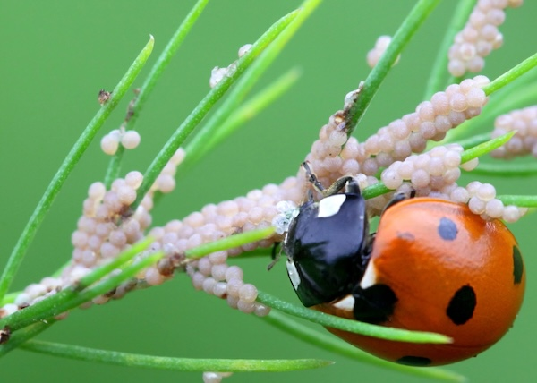

The continuous and reckless use of synthetic chemicals for the control of pests which pose a threat to agricultural crops and human health is proving to be counter-productive. Apart from engendering widespread ecological disorders, pesticides have contributed to the emergence of a new breed of chemical-resistant, highly lethal superbugs.
According to a recent study by the Food and Agriculture Organisation (FAO), more than 300 species of agricultural pests have developed resistance to a wide range of potent chemicals. Not to be left behind are the disease-spreading pests, about 100 species of which have become immune to a variety of insecticides now in use.
One glaring disadvantage of pesticides’ application is that, while destroying harmful pests, they also wipe out many useful non-targeted organisms, which keep the growth of the pest population in check. This results in what agroecologists call the ‘treadmill syndrome’. Because of their tremendous breeding potential and genetic diversity, many pests are known to withstand synthetic chemicals and bear offspring with a built-in resistance to pesticides.
The havoc that the ‘treadmill syndrome’ can bring about is well illustrated by what happened to cotton farmers in Central America. In the early 1940s, basking in the glory of chemical-based intensive agriculture, the farmers avidly took to pesticides as a sure measure to boost crop yield. The insecticide was applied eight times a year in the mid-1940s, rising to 28 in a season in the mid-1950s, following the sudden proliferation of three new varieties of chemical-resistant pests.
By the mid-1960s, the situation took an alarming turn with the outbreak of four more new pests, necessitating pesticide spraying to such an extent that 50% of the financial outlay on cotton production was accounted for by pesticides. In the early 1970s, the spraying frequently reached 70 times a season as the farmers were pushed to the wall by the invasion of genetically stronger insect species.
Most of the pesticides in the market today remain inadequately tested for properties that cause cancer and mutations as well as for other adverse effects on health, says a study by United States environmental agencies. The United States National Resource Defense Council has found that DDT was the most popular of a long list of dangerous chemicals in use.
In the face of the escalating perils from indiscriminate applications of pesticides, a more effective and ecologically sound strategy of biological control, involving the selective use of natural enemies of the pest population, is fast gaining popularity - though, as yet, it is a new field with limited potential. The advantage of biological control in contrast to other methods is that it provides a relatively low-cost, perpetual control system with a minimum of detrimental side-effects. When handled by experts, bio-control is safe, non-polluting and self-dispersing.
The Commonwealth Institute of Biological Control (CIBC) in Bangalore, with its global network of research laboratories and field stations, is one of the most active, non-commercial research agencies engaged in pest control by setting natural predators against parasites. CIBC also serves as a clearing-house for the export and import of biological agents for pest control world-wide.
CIBC successfully used a seed-feeding weevil, native to Mexico, to control the obnoxious parthenium weed, known to exert devious influence on agriculture and human health in both India and Australia. Similarly the Hyderabad-based Regional Research Laboratory (RRL), supported by CIBC, is now trying out an Argentinian weevil for the eradication of water hyacinth, another dangerous weed, which has become a nuisance in many parts of the world. According to Mrs Kaiser Jamil of RRL, ‘The Argentinian weevil does not attack any other plant and a pair of adult bugs could destroy the weed in 4-5 days.’ CIBC is also perfecting the technique for breeding parasites that prey on ‘disapene scale’ insects - notorious defoliants of fruit trees in the US and India.
How effectively biological control can be pressed into service is proved by the following examples. In the late 1960s, when Sri Lanka’s flourishing coconut groves were plagued by leaf-mining hispides, a larval parasite imported from Singapore brought the pest under control. A natural predator indigenous to India, Neodumetia sangawani, was found useful in controlling the Rhodes grass-scale insect that was devouring forage grass in many parts of the US. By using Neochetina bruci, a beetle native to Brazil, scientists at Kerala Agricultural University freed a 12-kilometre-long canal from the clutches of the weed Salvinia molesta, popularly called ‘African Payal’ in Kerala. About 30,000 hectares of rice fields in Kerala are infested by this weed.